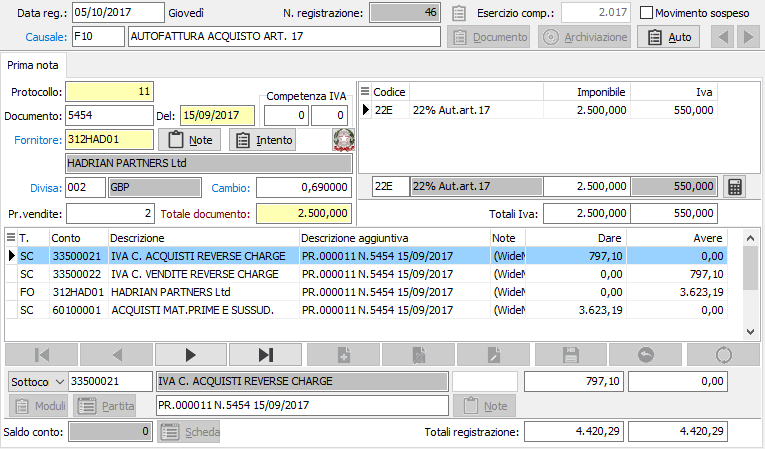
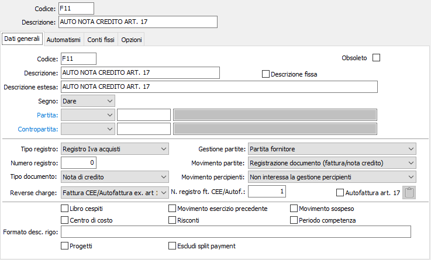

Registrazione autofatture ex art. 17
Registrazione di Autofattura
Le fatture per prestazione di servizi di fornitori esteri soggiacciono alla normativa relativa all'art. 17 del DPR 633 che comporta, similmente alla registrazione di fatture di acquisto Intracomunitarie, la registrazione ai fini Iva sia sul registro Iva acquisti sia sul registro Iva vendite. A differenza di queste non è tuttavia prevista l'adozione di numerazioni particolari di protocollo.
Una ulteriore particolarità consiste nella possibilità che su entrambi i registri Iva anzichè la ragione sociale del fornitore estero venga descritta la ragione sociale utente per autofatture.
Questa opzione è governata dalla presenza o dall'assenza di un codice di sottoconto nella Tabella Codici fissi del programma Configurazione moduli.
Se il campo Cliente autofattura contiene un codice cliente appositamente creato, sui registri Iva viene stampata la ragione sociale di questo cliente, mentre la registrazione contabile viene correttamente imputata al fornitore estero. Se invece il campo è vuoto, sui registri Iva viene stampata la ragione sociale del fornitore estero.
Per registrare una autofattura di acquisto, occorre utilizzare una causale analoga a quella illustrata di seguito.
La causale attiva le partite aperte. Gli utenti che non intendono utilizzare le partite aperte, indicheranno nell'apposito campo il valore non interessa la gestione partite. è possibile anche inserire delle note, tramite l'apposito bottone, per personalizzare il testo da riportare nella stampa dell’autofattura stessa.
Se non vengono gestite le partite aperte, la registrazione prevede la finestra video Prima nota (Iva + contabilità); in caso contrario, è prevista anche la finestra video Registrazione partita.
L'esempio contempla una fattura per addebito royalties dal Sudafrica, con fattura in sterline e cambio variabile rispetto all'Euro. Non essendo presente il codice cliente autofatture in Tabella Codici fissi, sui registri Iva verrà stampata la ragione sociale del fornitore estero.

Per quanto attiene alla finestra video Registrazione partita, lo sviluppo della finestra video è assolutamente identico a quello di una qualsiasi fattura di acquisto in divisa estera.
Registrazione di Nota di credito
La registrazione di una nota di credito su autofatture ex art. 17 segue la normativa delle corrispondenti fatture di acquisto, ovvero: utilizza una numerazione normale di protocollo sia per la registrazione Iva acquisti che per la registrazione Iva vendite; può stampare la ragione sociale del cliente autofatture o quella del fornitore estero; viene maggiorata dell'Iva acquisiti teorica e viene calcolata l'Iva vendite teorica. Viene stampata sia sul registro Iva acquisti Intra che sul registro Iva vendite.
Utilizza una causale contabile simile a quella illustrata di seguito.

Per la registrazione si seguono le modalità già illustrate per la corrispondente registrazione di fattura di acquisto Intra in cui, pur impostando un totale documento al netto di Iva, la stessa viene calcolata e aggiunta sia come Iva acquisti che come Iva vendite.
Per la finestra video Registrazione partita, se attivata, valgono le considerazioni già illustrate: all'atto della conferma del movimento, il programma effettua un controllo sulla tabella scadenze per il fornitore attivo, e se individua l'esistenza di partite aperte visualizza il messaggio relativo all'eventuale conferma di assegnazione della nota di credito ad una partita esistente.